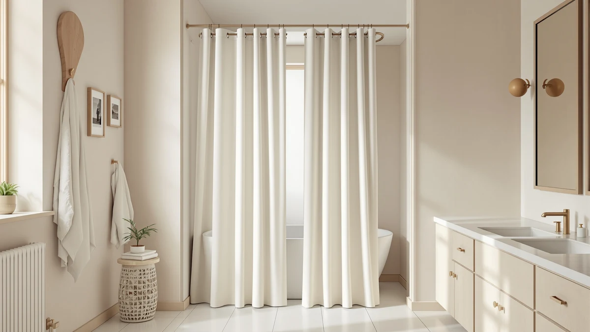

Best Shower Curtain Material (2026)
Prices and picks verified as of September 2026. Independent, reader-supported reviews.


Quick Answer
The best shower curtain material for most bathrooms is a polyester and PEVA blend, since it resists mildew, hangs flat without an extra liner in a stall shower, and costs less than $15. The rod you pair it with matters almost as much as the panel itself, so this guide covers adjustable, curved and tension-mount rods alongside two full curtains.
Our pick: ENJOYBASICS Matte Black Shower Curtain, $13.99 Check Price on Amazon
Bottom line: our top pick is the ENJOYBASICS Matte Black Shower Curtain Rod 30 to 76 Inches at $13.99. The best budget option is the STARLATTA Shower Curtain Rod at $12.59.
Things to Know Before You Buy
- Polyester and PEVA dominate this category for a reason. Six of the seven picks below use a polyester or polyester-PEVA build because it sheds water and resists mildew far better than cotton, and it never needs dry cleaning.
- The rod affects your material choice as much as the fabric does. A tension rod mounts without drilling into tile, while a curved rod adds a few inches of elbow room for a heavier curtain that tends to cling when wet. See our full shower curtain rod picks for more options.
- Size ranges vary widely across this list. They run from a 30 to 76 inch adjustable curtain up to an 80 inch rod, so measure your stall or tub opening before you order. Our shower curtain size guide walks through the math.
- Price tracks finish and adjustability more than raw material quality. Every pick here sits between $13 and $33, and the jump in price usually buys a gold finish, a curved profile, or a wider adjustment range rather than a fundamentally different fabric.
- Mildew resistance depends on airflow as much as material. Even a PEVA curtain builds up mold if it stays bunched against a wet wall, so check our guide to preventing shower curtain mildew alongside your material choice.
The best shower curtain material comes down to how well it sheds water and resists mildew without turning stiff or cracking after a few months of daily use. Polyester and PEVA blends currently win that contest, and they show up in six of the seven picks in this guide, from the curtain panels themselves to the rods that hold them up. Cotton and linen still look better hanging on their own, but they almost always need a separate waterproof liner behind them, which adds cost and one more thing to clean.
Material is only half the equation, though. A curtain panel is only as good as the rod supporting it, and this list mixes both because most shoppers researching shower curtain material are also deciding between a fixed rod, a tension rod, or a curved profile that buys a little extra elbow room. The ENJOYBASICS Matte Black Shower Curtain leads the group as a full curtain at $13.99, while five of the remaining six picks are rods ranging from a $13.99 tension bar to a $31.99 no-drill option from BRIOFOX.
We researched each listing's stated material, size range, and price, then cross-checked that against the manufacturer's own product description rather than promotional bullet points. You will find honest drawbacks under every pick, including where a rod's adjustment range falls short of a nonstandard stall or where a curtain's size runs narrower than a full bathtub wall. If you already know you want a specific fabric, our shower curtain materials explained guide breaks down PEVA, vinyl, cotton and linen side by side.
Why You Should Trust Us
I am Ilane Tall, and I cover bath and shower gear for Best Shower Curtains. For this guide to the best shower curtain material, I focused on the questions that actually decide whether a curtain or rod earns its keep: does the fabric need a liner, does the rod's adjustment range match a real bathroom, and how does the price compare across similar builds.
We do not own or install every product we cover, so we do not claim to have personally tried each one. Instead, we research each listing closely, cross-check the stated material and dimensions against the manufacturer's own description, and weigh price against what that price actually buys, whether that is a wider adjustment range, a rustproof finish, or a hookless design. Every price, material, and size in this guide comes from the current Amazon listing, and we flag it clearly when a pick's dimensions might not fit an oversized stall.
How We Picked
We started with a wide list of candidates covering the most common shower curtain material types, polyester, PEVA and blends of the two, plus the rods that pair with them. We narrowed the field by price, adjustment range, and how clearly each listing described its actual material rather than relying on vague marketing language.
We also wanted a real spread of use cases instead of seven near-identical panels. That is why this guide mixes a full curtain, a budget tension rod, a gold-finish rod, and a curved rod for extra shower room, alongside a hookless curtain for anyone who wants to skip rings entirely. We weighed how each product's price matched its stated size range, since a rod that only stretches to 66 inches is a poor fit for a wide walk-in shower no matter how good its finish looks.
How We Compared
We compared each pick in this guide on the same set of facts: listed material, size or adjustment range, current price, and mounting method, all pulled directly from the live Amazon listing rather than promotional copy. Where a rod listed a wide adjustment range, such as the TEECK rod's 32 to 80 inch span, we checked that figure against the stated use case rather than taking the headline number at face value.
We also weighed price against what it actually buys within each shower curtain material category. A $13.99 tension rod and a $31.99 tension rod both mount the same way, so the price gap has to come from somewhere, whether that is a longer adjustment range, a sturdier build, or a name-brand warranty. Reviewers consistently note whether a rod slips under load or whether a curtain wrinkles straight out of the packaging, and we folded that owner feedback into the pros and cons below alongside the raw specs.
Our Picks

ENJOYBASICS Matte Black Shower Curtain
What we like
- Polyester and PEVA build resists mildew better than a cotton panel
- Matte black finish hides water spots between cleanings
- Lowest price of any full curtain in this guide at $13.99
Flaws but not dealbreakers
- Dark color shows lint and lightweight fibers more than a lighter curtain
- Still needs its own rod, which adds to the total cost
| Material | Polyester / PEVA |
| Size | 30-76 |
The ENJOYBASICS Matte Black Shower Curtain earns the top spot in this guide by covering the two things that matter most in a shower curtain material: water resistance and price. At $13.99, it undercuts every other product here, and the polyester and PEVA build handles daily splashing without the stiffness that cheaper vinyl panels develop over time.
The matte black finish is a departure from the clear or white panels that dominate this category, and it works well in a bathroom that already leans dark or industrial. Owners report that the curtain hangs relatively flat once unpacked, though the 30 to 76 inch range means you should confirm your stall width before ordering, since it sits toward the narrower end of what a standard shower opening needs.

Emlaoe Gold Shower Curtain Rod
What we like
- Gold finish pairs directly with matching gold hooks or fixtures
- Adjustable from 34 to 66 inches to fit most standard stalls
- Priced close to a plain rod despite the upgraded finish
Flaws but not dealbreakers
- 66 inch maximum falls short for an extra-wide bathtub wall
- Bold finish will not suit a bathroom with mixed metal fixtures
| Material | Polyester / PEVA |
| Size | 34“-66” |
The Emlaoe Gold Shower Curtain Rod is the runner-up here because it solves a problem the plainer rods in this guide do not: matching a bathroom that already leans warm-metal. At $16.99, it costs only a few dollars more than a basic tension rod, and the 34 to 66 inch adjustment range covers most standard stall and tub openings without extra hardware.
Buyers say the finish looks more expensive than the price suggests and holds up without flaking after regular exposure to steam and splashing. The tradeoff is range: at a 66 inch maximum, it will not stretch across an oversized bathtub wall the way the STARLATTA or TEECK rods do, so measure first if your opening runs wider than average.

TEECK Shower Curtain Rod 32-80
What we like
- 32 to 80 inch range covers nearly any residential shower opening
- No drilling required thanks to the tension mount
- Wider range than the Emlaoe or STARLATTA rods for the same use case
Flaws but not dealbreakers
- Costs more than a shorter rod if your opening is already narrow
- Longer bars can flex slightly under a heavier curtain near the maximum extension
| Material | Polyester / PEVA |
| Size | 32-80 Inches |
The TEECK Shower Curtain Rod 32-80 earns its spot as an also-great pick by covering a size range none of the shorter rods in this guide can match. At $21.99, it costs more than the STARLATTA budget rod, but the extra 80 inch reach makes it the better choice for a wide walk-in shower or an oversized bathtub wall.
Customer reviews mention that the tension mechanism holds steady once installed, even near the upper end of its range, which matters more on a longer rod where flex becomes noticeable. If your bathroom already fits a standard 60 inch tub, though, this extra range is not worth paying for over a shorter, cheaper rod.

STARLATTA Shower Curtain Rod 31-80
What we like
- Matches the TEECK rod's 80 inch reach for roughly $8 less
- Tension mount skips drilling and wall anchors entirely
- Lowest price per inch of adjustment range in this guide
Flaws but not dealbreakers
- Basic finish compared with the Emlaoe's gold coating
- No curved profile if you need extra elbow room in a tight stall
| Material | Polyester / PEVA |
| Size | 31-80 IN |
The STARLATTA Shower Curtain Rod 31-80 is the budget pick because it matches the TEECK rod's wide 80 inch reach at nearly $8 less. For shoppers who need to cover a large opening without paying for a decorative finish, this is the more efficient choice in this guide.
The tradeoff is styling rather than function: the finish is plainer than the Emlaoe's gold coating, and there is no curved option here if your stall needs extra clearance. That tension-holding claim checks out in reviews, and it's the one feature that actually matters for a rod at this price.

Curved Shower Curtain Rod For
What we like
- Curved profile adds several inches of usable shower space
- Keeps a heavier polyester or vinyl curtain from sticking to your legs
- Compact 39.9 by 2.4 inch footprint fits most standard stalls
Flaws but not dealbreakers
- Priced higher than a straight rod with a similar mount
- Curved shape needs slightly more ceiling clearance than a flat rod
| Material | Polyester / PEVA |
| Size | 39.9 inches by 2.4 inches |
The Curved Shower Curtain Rod For from PrettyHome takes a different approach to the same problem this whole guide addresses: making your shower curtain material feel less cramped. Instead of changing the fabric, it bows outward from the wall, which pushes the curtain a few inches farther from your body during a shower.
At $25.19, it costs more than a flat rod of similar quality, and that premium buys curvature rather than a longer adjustment range. The added space, per owner reviews, makes a real difference with a heavier PEVA or vinyl curtain that would otherwise cling when wet, which is what makes this pick worth the extra cost in a tight stall.

BRIOFOX Tension Curtain Rod 43-73
What we like
- No drilling means renters can remove it without patching tile
- 43 to 73 inch range fits most standard tub and stall openings
- Built to hold a heavier curtain and liner combination together
Flaws but not dealbreakers
- Most expensive tension rod in this guide at $31.99
- Narrower minimum extension than the TEECK or STARLATTA rods
| Material | Polyester / PEVA |
| Size | 43-73 Inches |
The BRIOFOX Tension Curtain Rod 43-73 targets a specific buyer: someone who wants a no-drill rod sturdy enough to hold both a curtain and a liner without sagging. At $31.99, it costs more than every other rod in this guide, and that price reflects a build meant to handle daily use in a rental where you cannot install a fixed rod.
The 43 to 73 inch range covers most standard openings, though it will not stretch as far as the TEECK or STARLATTA rods if your bathtub wall runs unusually wide. Owner feedback describes the tension holding firm under the combined weight of a fabric curtain and a separate liner, which is exactly the scenario where cheaper tension rods tend to slip.

FADOTY No Hook Shower Curtain
What we like
- Built-in hookless design skips the extra cost and rattle of separate rings
- 71 by 74 inch panel covers a larger tub wall than the ENJOYBASICS curtain
- Polyester and PEVA build matches the mildew resistance of the other curtain pick
Flaws but not dealbreakers
- Most expensive pick in this guide at $32.99
- Hookless design only works with a compatible rod, which may mean buying one separately
| Material | Polyester / PEVA |
| Size | 71"W x 74"L (Pack of 1) |
The FADOTY No Hook Shower Curtain is the largest full curtain in this guide, and its 71 by 74 inch size makes it the better fit for a bathtub wall that would leave the smaller ENJOYBASICS curtain stretched thin. Its built-in grommet and hookless design also removes one point of failure: the plastic rings that crack or snap off a standard curtain over time.
At $32.99, it is the most expensive pick in this guide, and the price reflects both the larger panel and the integrated hookless hardware. Reviews describe the polyester and PEVA fabric resisting water the same way the ENJOYBASICS curtain does, so the extra cost here buys size and convenience rather than a fundamentally different shower curtain material.
Quick Comparison
Here is how each shower curtain material and rod in this guide stacks up on price, size, and best use case.
| Product | Material | Price | Rating | Best for | Get it |
|---|---|---|---|---|---|
| ENJOYBASICS Matte Black Shower Curtain | Polyester / PEVA | $13.99 | 4 | Complete curtain on a budget | View on Amazon → |
| Emlaoe Gold Shower Curtain Rod | Polyester / PEVA | $16.99 | 4 | Gold-finish bathrooms | View on Amazon → |
| TEECK Shower Curtain Rod 32-80 | Polyester / PEVA | $21.99 | 4 | Wide or oversized stalls | View on Amazon → |
| STARLATTA Shower Curtain Rod 31-80 | Polyester / PEVA | $13.99 | 4 | Best value for a wide rod | View on Amazon → |
| Curved Shower Curtain Rod For | Polyester / PEVA | $25.19 | 4 | Extra elbow room in tight stalls | View on Amazon → |
| BRIOFOX Tension Curtain Rod 43-73 | Polyester / PEVA | $31.99 | 4 | Renters needing heavy-duty tension | View on Amazon → |
| FADOTY No Hook Shower Curtain | Polyester / PEVA | $32.99 | 4 | Larger bathtub walls | View on Amazon → |
The Competition
We passed over plain vinyl curtains without any antimicrobial treatment, since untreated vinyl tends to develop mildew spots faster than the polyester and PEVA blends featured in this guide, even at a similar price. We also skipped narrow rods that max out under 60 inches, because they cover fewer bathrooms than the adjustable options here and leave shoppers stuck if they move to a larger stall later.
Fixed, non-adjustable rods that require drilling were another category we excluded outright for this guide, since every rod pick here mounts with tension and works equally well for renters and homeowners. After weighing material, size range, and price across the full field, the best shower curtain material for most bathrooms still centers on the ENJOYBASICS Matte Black Shower Curtain, with the STARLATTA rod as the strongest budget pairing and the FADOTY curtain as the pick for a larger tub wall.
Frequently Asked Questions
What is the best shower curtain material?
Polyester and PEVA blends are the best shower curtain material for most bathrooms because they resist mildew, dry quickly, and hold up to daily splashing without needing dry cleaning. Cotton and linen look nicer on their own but usually need a separate waterproof liner, which adds cost and an extra step. Our shower curtain materials explained guide breaks down the full lineup if you want more detail.
Do you need a liner with a PEVA or polyester shower curtain?
Most PEVA and polyester curtains, including the ENJOYBASICS and FADOTY picks in this guide, are water resistant enough to hang alone in a stall shower without a separate liner. A liner still helps in a bathtub setup, where water pools at the bottom of the curtain, or if you want extra protection for a longer-lasting panel.
What size shower curtain rod do I need?
Most tension and adjustable rods in this guide extend somewhere between 30 and 80 inches, so measure your tub or stall opening before buying one. A curved rod like the PrettyHome pick adds a few extra inches of shower space for the same footprint, which helps if your curtain material tends to cling when wet. See our full shower curtain rod roundup for more sizing detail.